Геймплейные утечки
Слухи и ранние ролики породили целую волну обсуждений: от уличной атмосферы Вайс-Сити до сурового криминального ритма жизни главных героев.
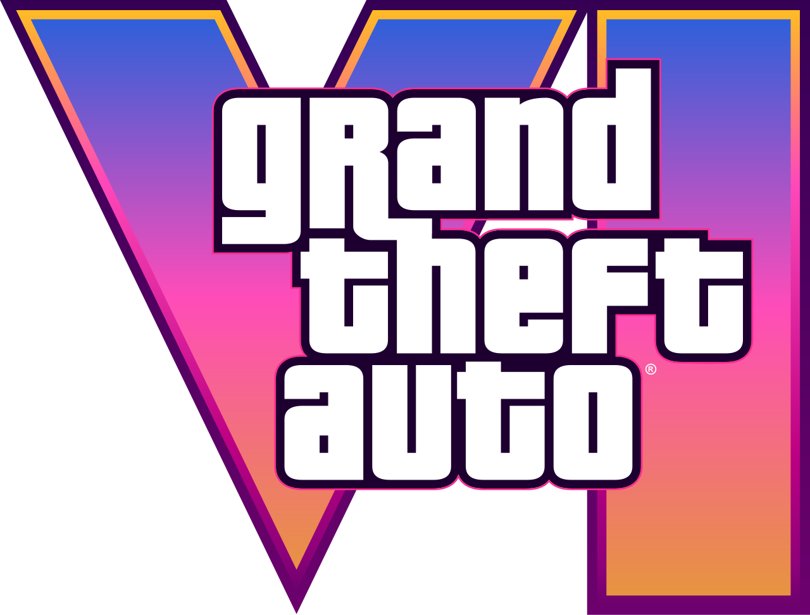
Rockstar Games · Vice City
Вайс-Сити снова зовёт. Узнайте больше о самой ожидаемой игре нашего поколения и о мире, где криминал, романтика и хаос переплетаются в одном сердце Леонида.
Leaks & media
Слухи и ранние ролики породили целую волну обсуждений: от уличной атмосферы Вайс-Сити до сурового криминального ритма жизни главных героев.
Блоги, стримеры и новостные каналы постоянно разбирают каждый кадр, добавляя в сеть новые теории о сюжете, персонажах и связях между героями.
Короткие видео, скриншоты и фрагменты интерфейса превращаются в отдельную культурную волну, усиливая интерес к игре ещё до релиза.
В центре истории
Люсия выходит из тюрьмы и объединяется с Джейсоном. Вместе они оказываются втянуты в рискованное ограбление, которое может изменить их жизнь.
Знакомый курортный город возвращается в новом масштабе: от ярких улиц до болот Леонида, где у каждого места есть своя история.
Дуэт игры
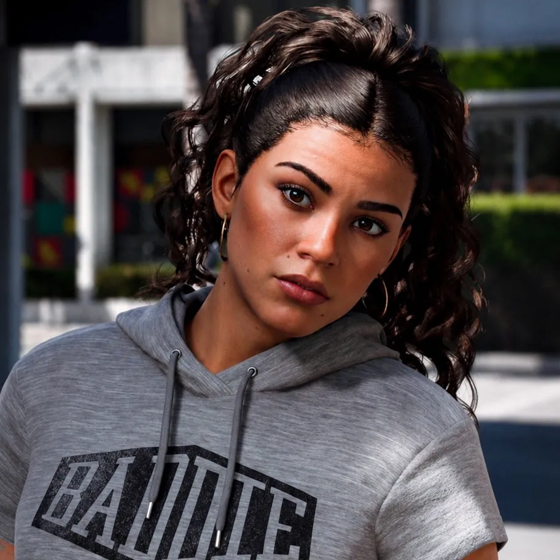
Люсия КаминосЛюсия готова бороться за новую жизнь и не боится идти до конца ради свободы.
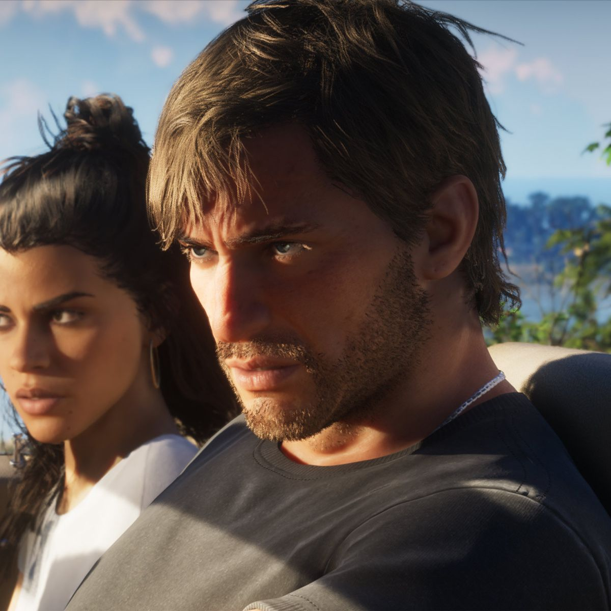
Джейсон ДувалДжейсон знает правила улиц. Но с Люсией ему предстоит рискнуть всем, что у него есть.
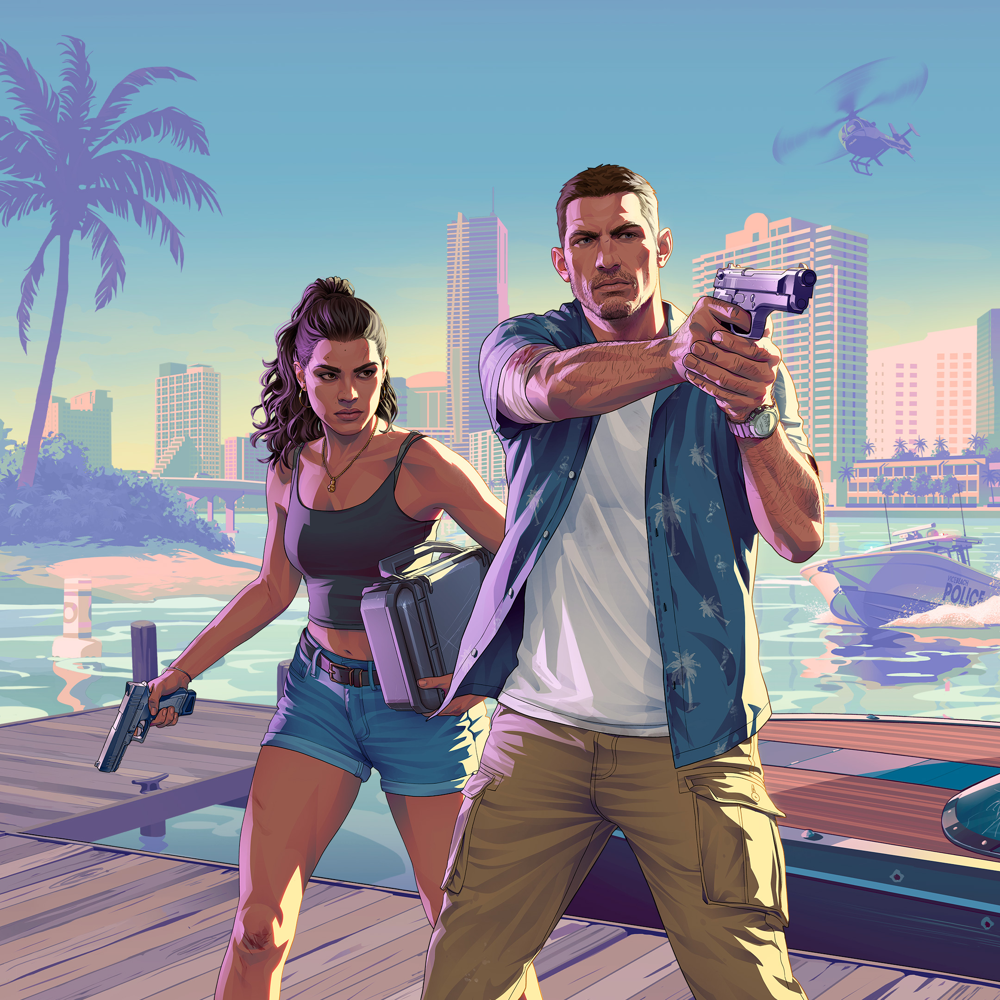
Исследуйте Леониду
Штат Леонида в Grand Theft Auto VI — это самый масштабный и детализированный открытый мир в истории Rockstar Games. Он воссоздает атмосферу современного юга США с резким контрастом между гламуром неоновых курортов и дикой, хаотичной провинциальной жизнью.
Тропический архипелаг островов на самом юге штата, где есть место катерам, гидроциклам и дайвингу, а также контрабандным маршрутам и виллам.
Огромная заболоченная территория с багги, катерами на воздушной подушке, дикой природой, лагерями выживальщиков и нелегальными базами.
Индустриальный хаб с доками, складами, мотелями и стрип-клубами вдоль шоссе, где кипит логистика и криминальная жизнь.
Зона грязевых треков, заправок, трейлерных парков и местной автомобильной культуры, где ведут себя по-своему и люди, и дороги.
Открытый мир
Открытый мир Grand Theft Auto VI — это не просто увеличенная территория, а крупнейший симулятор современной жизни и криминала, созданный Rockstar Games. В основу штата Леонида (Leonida) лег реальный штат Флорида с его контрастами: от ультрабогатых неоновых курортов до бедных трейлерных парков и непроходимых болот.
Ниже представлен подробный разбор структуры открытого мира, его регионов, физики и механик живого окружения.
По оценкам сообщества картографов и анализу утечек, карта Леониды примерно в 2–2,5 раза больше, чем Лос-Сантос и округ Блейн из GTA V. Главное отличие заключается не только в площади, но и в вертикальности и плотности застройки: городская зона содержит сотни доступных для входа зданий, а загородная местность насыщена уникальными биомами.
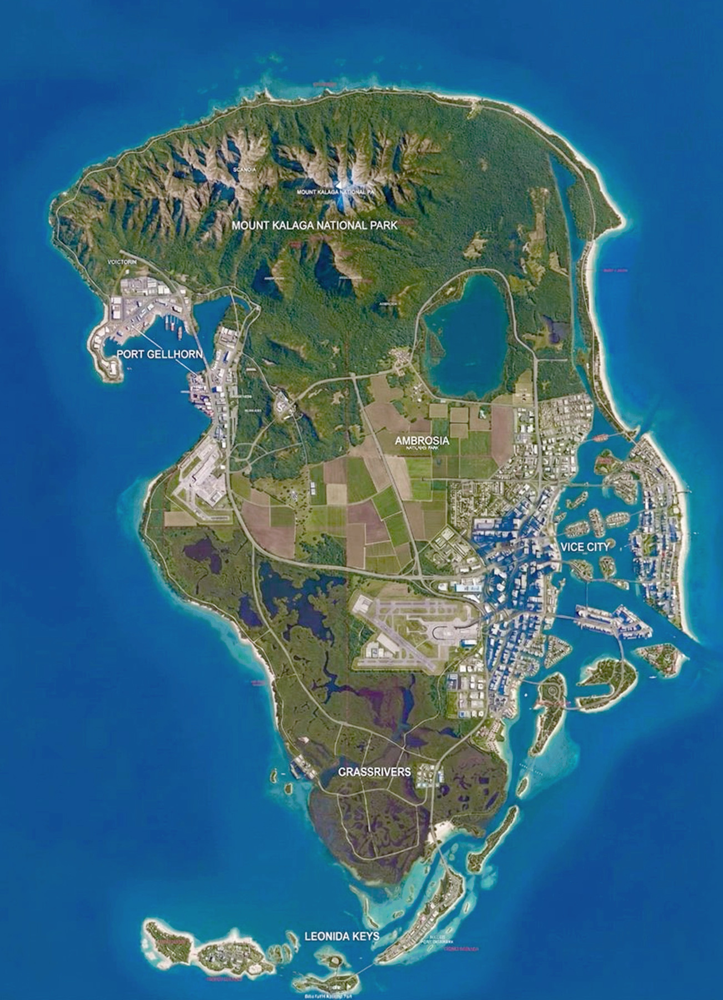
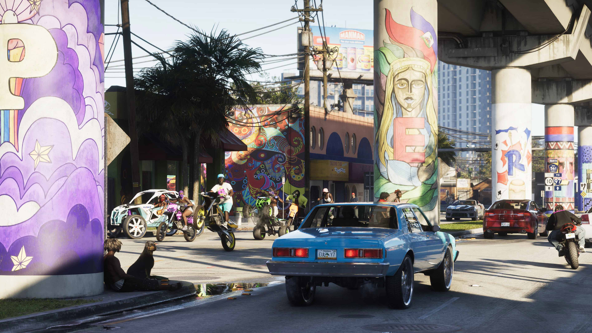
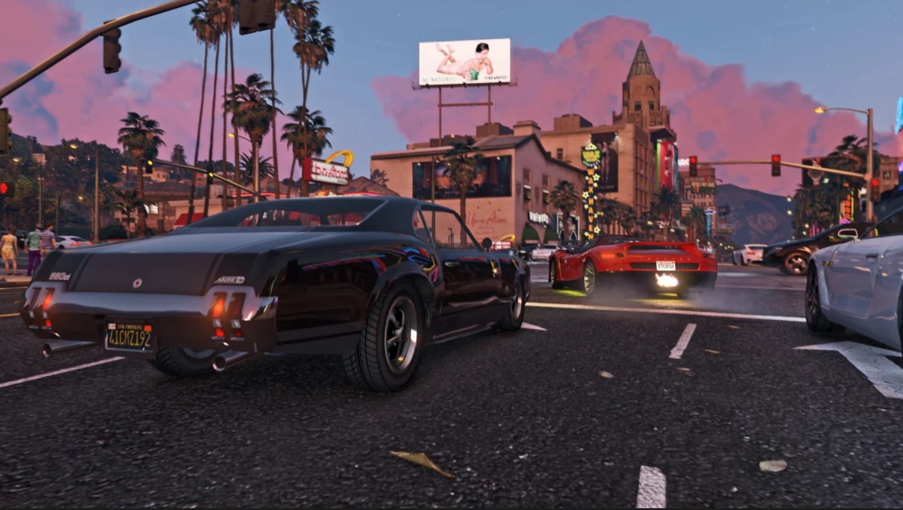
Сердце штата Леонида, сияющее неоновыми огнями и наводненное туристами, суперкарами и бандами.
Цепочка тропических островов на самом юге карты.
Прототип национального парка Эверглейдс — гигантская болотная система в центре штата.
Суровый провинциальный юг с индустриальным оттенком.
В GTA VI совершен масштабный шаг вперед по количеству доступных зданий. Более 50–60% зданий имеют полноценные внутренние помещения, а взаимодействие с локациями стало настоящим открытым миром для ограблений и побегов.
Жители Леониды обладают сложными алгоритмами поведения: NPC имеют собственный распорядок дня, умеют реагировать на погоду, а уличные группировки и компании формируются сами по себе.
Любая перестрелка, дрифт на перекрестке или безумная выходка героя фиксируется прохожими на смартфоны. Видеоролики с участием героев попадают в локальную ленту новостей и соцсетей, меняя отношения к ним в мире.
Персонажи и история
История строится вокруг криминального дуэта, чьи отношения напоминают современную версию истории Бонни и Клайда. События разворачиваются в вымышленном штате Леонида, созданном по мотивам Флориды, и в обновлённом Вайс-Сити.
Прагматичная и опасная, она строит свою карьеру на расчёте, хитрости и мгновенном принятии решений.
Надёжный, хладнокровный и опытный, он умеет менять план на ходу и всегда знает, как уйти от погони.
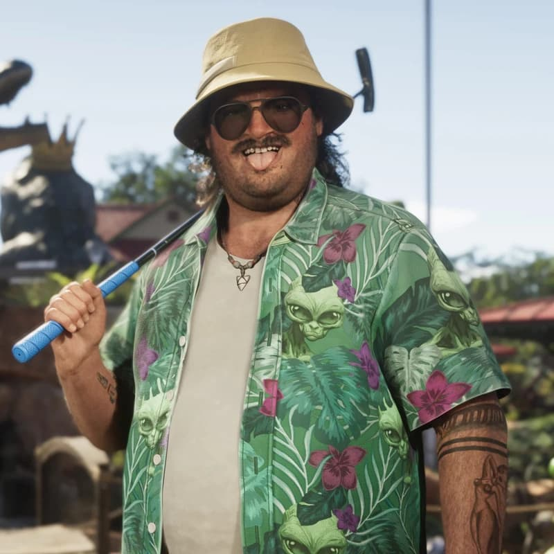
Конспиролог, которому сложно поверить в интриги и измены, но он всегда рядом, когда дело доходит до риска.
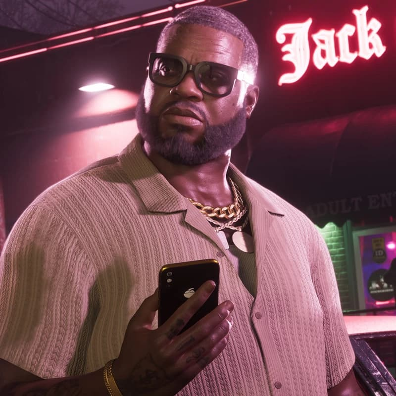
Местная легенда, предприниматель с широкими связями и тягой к громкой жизни в самом сердце мегаполиса.
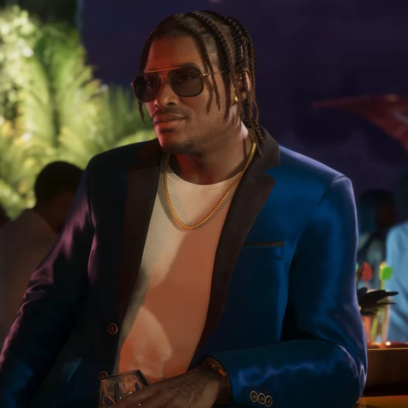
Собственный звук, рискованные сделки и репутация в самом центре городской культуры.
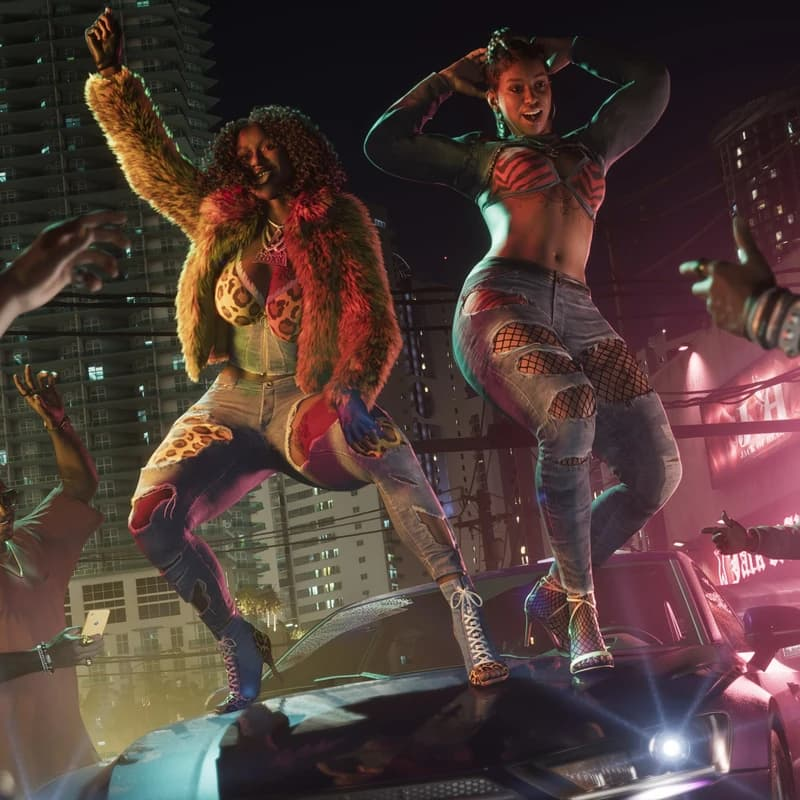
Бэй-лайф и старый друг — опора музыки и актуального общественного голоса в городе, где всё решают ритм и громкий стиль.
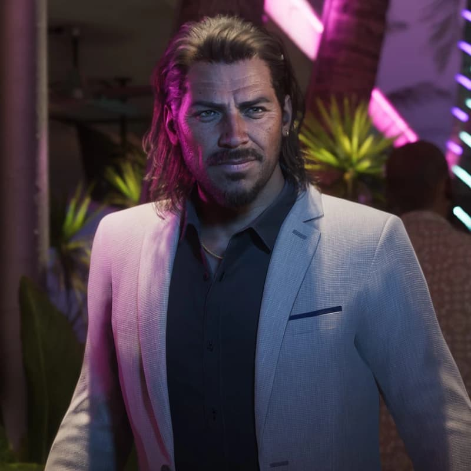
Опытный грабитель, умеющий действовать быстро, без лишних слов и с молниеносной реакцией в суматохе.
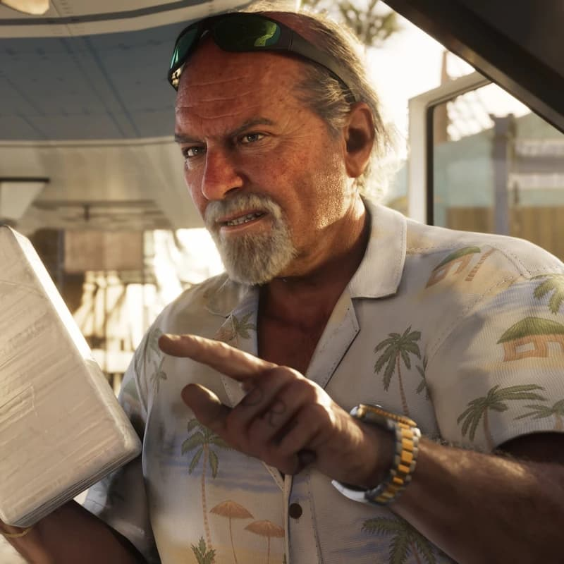
Наркокурьер с репутацией в округе, управляющий сетью контактов и влияния на берегах Леонида-Кис.
Люсия — первая женщина-протагонист в современной 3D/HD-эре франшизы Grand Theft Auto.
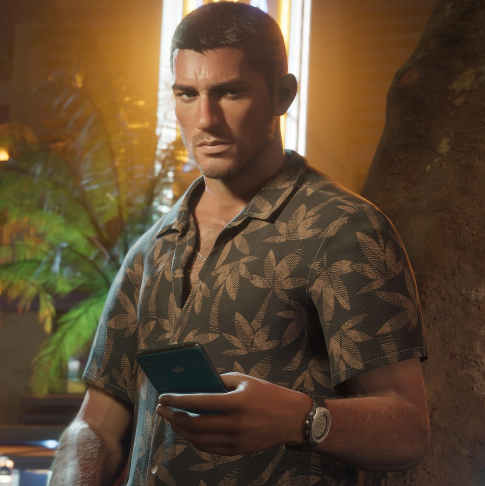
Джейсон — напарник Люсии в криминальных делах и её ближайший союзник.
В отличие от GTA V, где три героя жили отдельными жизнями, Люсия и Джейсон — это полноценная пара. Игроки могут развивать их романтические и доверительные отношения через диалоги и решения во время совместных вылазок. Персонажи непрерывно взаимодействуют друг с другом: советуются перед заданиями, обсуждают план, прикрывают друг друга в перестрелках и делят общее снаряжение.
Ключевые особенности
Штат Леонида в Grand Theft Auto VI — это самый масштабный и детализированный открытый мир в истории Rockstar Games. Он воссоздает атмосферу современного юга США с резким контрастом между гламуром неоновых курортов и дикой, хаотичной провинциальной жизнью.